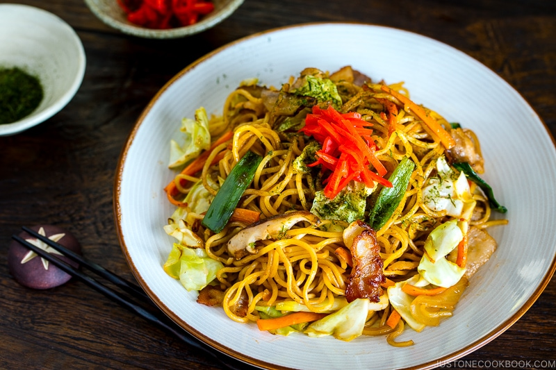

How to make Yakisoba

Description
This yakisoba slaps and it'll have everyone thinking you're a top chef. What they don't know
is that it's actually easy to make and you can change it up however you want.
Ingredients
- 1/2 Onion
- 1 carrot, julienned
- 3 shiitake mushrooms, sliced
- 2 green onions/scallions, chopped
- 4 green cabbage leaves
- Your choice of protein or tofu, cut into bite size pieces
- 2 tbsp neutral flavored oil
- Ground black pepper
- Yakisoba noodles
- Yakisoba sauce
Steps
-
Heat oil in a large skillet or wok on medium high heat and cook the meat until its no longer
pink
- Add onions and carrots and cook for 1-2 minutes
- Add the cabbage, cook until almost tender
-
Add green onions and shiitake mushrooms and cook for 1 minute. Add black pepper and stir.
-
Run hot water over noodles to separate them. Then add to the skillet/wok and lower heat to
medium. Use tongs to combine noodles with rest of ingredients.
- Add yakisoba sauce and mix everything up. Serve.